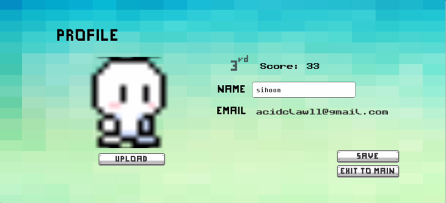
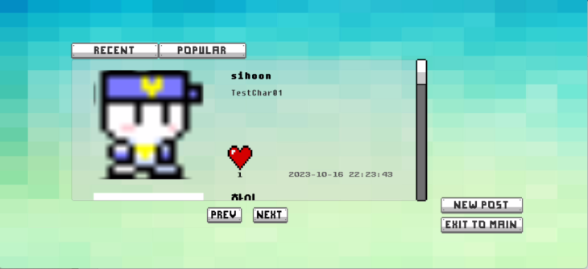

Projects
Laboratory H
Feb, 2024 - Now (temporarily paused)
Python, Flask
A website that provides various features: Kakaotalk conversation analysis(completed), Time capsule letter(ongoing), etc.- Pre-processed over 1 million lines of Kakaotalk chat data and create a SQL table using Pandas.
- Made the analyzed data visible in web with Flask.
- Developing a time capsule letter service.
Picaxer
Mar, 2023 - Oct, 2023
|
Graduation project | 3 members | GitHub
C#, Firebase, Unity, Git
A pixel art editor that can draw pixel arts and share them.This editor provides features: draw the pixel art, save it, and share it with the community in service.
In community, they can get likes from other users by uploading their art, they also can download other users' art.
- Designed and managed the Firebase database as well as connect it to the Unity project.
- Developed user management and community services with C#.
- Deployed as Android.


Recommade
Jun, 2022 - Jul, 2022
|
Headstart SV Internship Program | 8 members | GitHub
Python, Django, MySQL, Nginx, Gunicorn, Docker, AWS, Git
A website that generates playlists that go well with the uploaded photos according to the object and atmosphere of it.Users can upload photos with their preferred genre, which improves recommendation satisfaction.
Users can play pieces of music, and save their recommended playlist if the user has an account. Still, they can get recommendations and play music without an account.
- Designed server architecture and system structure of the service with colleagues.
- As a back-end developer, I designed, implemented, and tested playlist generating/saving and playlist showing features through Django/Python.
- Combined back-end, front-end, AI and database via docker-compose and deploy to AWS EC2.

LUNAR AI
May, 2021 - Dec, 2021
|
Start-up Acceleration | Open Source SW | CBNU AI club: COSMIC | 6 members
Python, Django, MySQL
AI-based intelligent surveillance system.
- Implemented database related API using Django/Python.
- Managed face-detection data with MySQL.
Analysis of Solar Power Prediction with Data-Driven Approaches
May, 2021 - Oct, 2021
|
Global Joint Project | 4 members | 2 mentors
Python, Pandas
- Pre-processed weather data using Pandas, Python.
- Predicted solar power generation with ARIMA model.
ConcertMeet
Jun, 2021 - Aug, 2021
|
Likelion Hackaton | 4 members | GitHub
Python, Django, HTML, CSS, JQuery, Git
A website that helps to find mates to watch the performance together.Users can post about the performance, set the desired number of mates, and check which user will be with.
They can also check about existing performances and follow other users so that they can see the others' posts.
- Designed server architecture and system structure.
- Designed and implemented API using Django & Django Auth.
- Managed database with Django models.